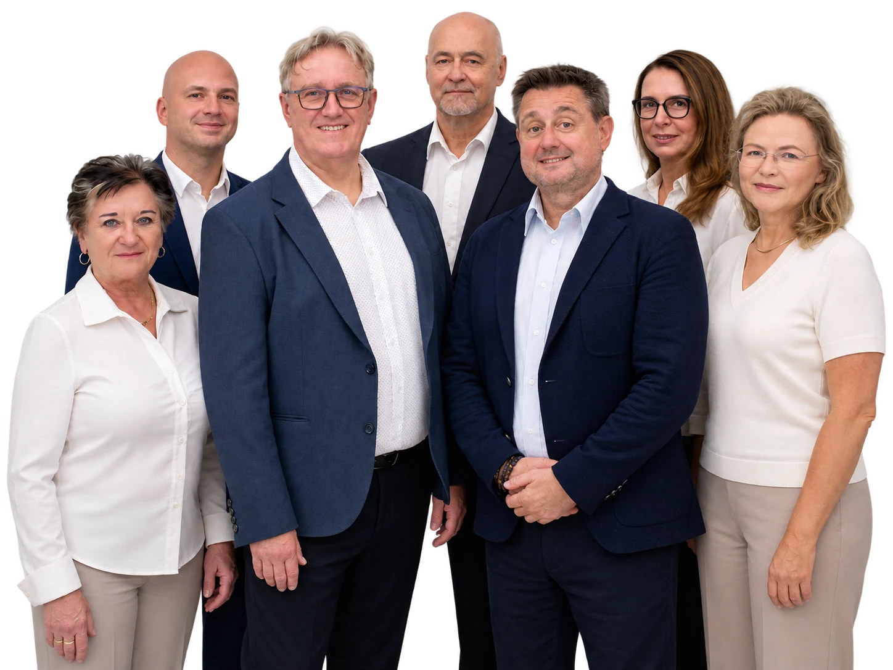

Komunální volby 9.–10. října 2026
Nezávislí lidé pro nový Třinec.
Doktoři, učitelé, podnikatelé, trenéři. Lidé, kteří v Třinci opravdu žijí a pracují a chtějí tu zůstat i po volbách. Kandidátku i program představujeme postupně.

Kampaň 2026
Kde nás potkáte
Besedy, závody a další akce, kam za námi můžete přijít.
Stejné hodnoty. Nové vize. Město, které nezůstane stát.
Nekandidujeme za stranické sekretariáty, ale za ulice, ve kterých bydlíme. Bezpečné cesty do školy, bydlení pro místní a rozpočet, do kterého se každý může podívat bez žádosti.
Volby do zastupitelstva
9.–10.
října 2026
Volte č. 7
Program
Sedmička pro Třinec.
01Bezpečné uliceKonec problémů s nepřizpůsobivýmiCo uděláme →02MHD pro Třinečáky zdarmaCo uděláme →03Příspěvek 2 500 Kč na volnočasové aktivity pro děti a senioryCo uděláme →04Nový dopravní terminál Lyžbice – SlovanCo uděláme →05Efektivní parkování a nová parkovací místaCo uděláme →06Byty pro mladé rodinyCo uděláme →07Probudíme město k životuVe dne i večerCo uděláme →Celý programZobrazit vše →
Přijďte volit. Jde o naše město.
Volte č. 7
Sledujte nás
Aktuality z kampaně, kde nás potkáte a co se právě děje v Třinci.